bb0nu · Reconstruction and ZS controls
- TopMetal: 3 mm pitch, reconstructed ions per 20 ms bucket.
- SiPMs: 4 mm pitch, corrected PE summed into 5 μs buckets. Both correspond to 3 mm in Z.
- All channels are reconstructed. Signed values are retained; no ZS cut is applied.
Ion reconstruction: linear inverse and iterative nonlinear fit (reference).
Summary
| Quantity | Count |
|---|---|
| Events | 100 |
| Pads reconstructed with nonlinear model | 232 |
| Failed ion reconstructions | 0 |
| Pads with an endpoint ADC code | 0 |
| Events with invalid PE buckets | 2 |
| Invalid rebinned PE buckets | 4 |
| Rebinned buckets containing ASIC clipping | 4 |
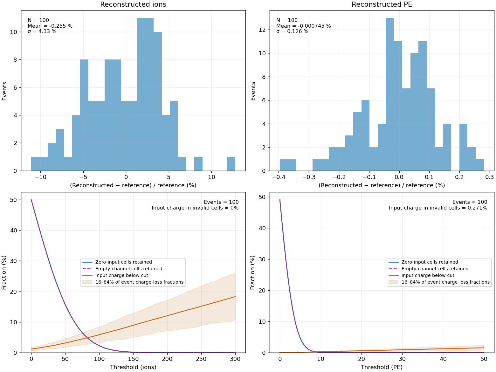
- Ion reference: collected ions in valid reconstructed cells.
- PE reference: PDE × photons in valid reconstructed cells. Attachment remains included in both.
- Threshold scans retain valid cells with reconstructed signal greater than the threshold.
- Input charge below cut is the fraction of total input charge in valid cells at or below the threshold. Invalid cells are reported separately.
Events
- Input signal > 0: input ions or photons in that cell.
- Zero input: no input in that time cell; the channel can have signal at other times.
- Channels with no input in event: noise-only channels throughout the acquired frame.

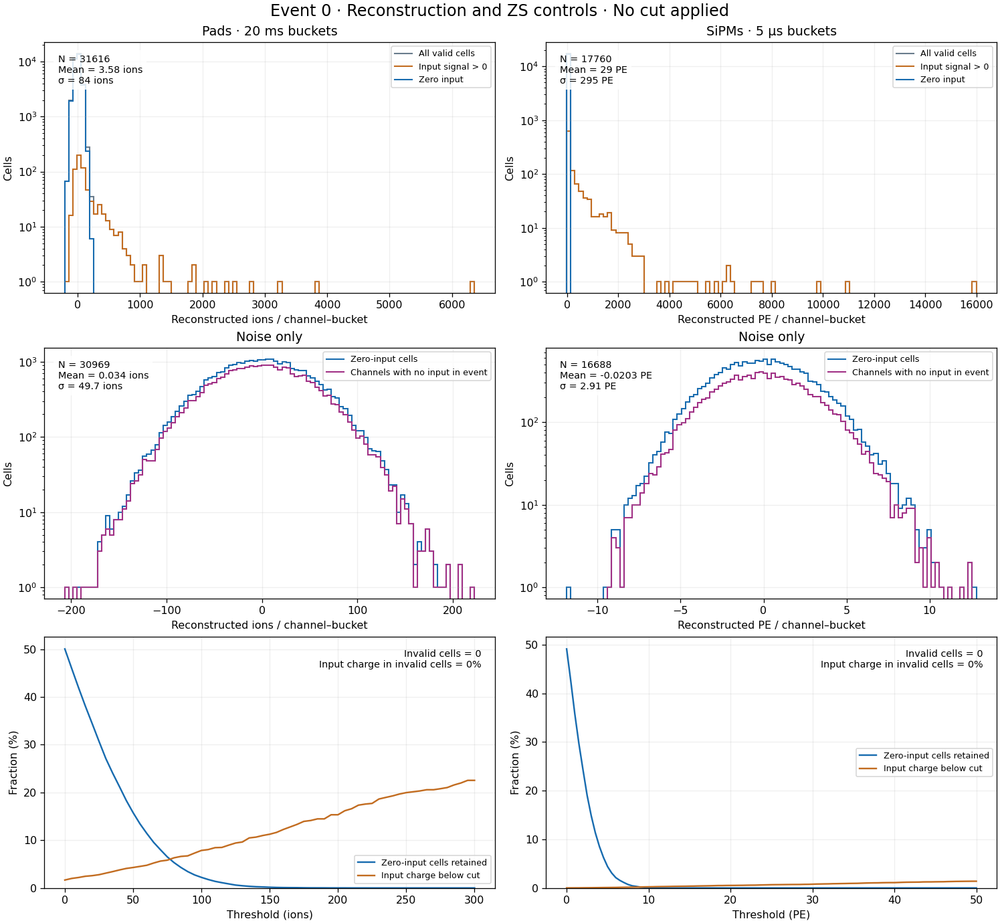
Noise check
Variance of summed reconstructed ions in empty pads / predicted variance: 1.0075. Mean empty-pad sum: -0.0659 ions. The prediction includes baseline subtraction, voltage correlations and ADC quantisation.
Timing and memory
One-time electronics preparation: 0.690 s. Event loop, including the first event: 149.68 s. Means and medians below exclude the first event.
| Calculation | Mean (s/event) | Median (s/event) |
|---|---|---|
| Ion reconstruction preparation | 0.0066 | 0.0060 |
| Ion reconstruction | 1.0280 | 0.8963 |
| PE correction and rebinning | 0.0007 | 0.0006 |
| Detector transport | 0.0090 | 0.0088 |
| Electronics | 0.3674 | 0.3531 |
| ZS controls | 0.0099 | 0.0095 |
Mean reconstruction allocations: 2158.36 MiB/event. Maximum prepared reconstruction arrays: 15.80 MiB.
PE inverse check
500 repetitions per illumination pattern. Criterion: absolute bias <= max(0.5 PE, 0.5% of expected PE, 3 standard errors). Tested up to 100,000 photons per original ASIC bucket; pilot maximum: 21179 photons.
Bias by pattern and bucket
| Pattern | Bucket | Expected PE | Bias (PE) | Standard error (PE) | Tolerance (PE) |
|---|---|---|---|---|---|
| dark | 1 | 0 | -0.0137 | 0.0269 | 0.5 |
| dark | 2 | 0 | 0.0172 | 0.0277 | 0.5 |
| dark | 3 | 0 | 0.0494 | 0.0307 | 0.5 |
| dark | 4 | 0 | 0.000255 | 0.0301 | 0.5 |
| dark | 5 | 0 | 0.0154 | 0.0306 | 0.5 |
| dark | 6 | 0 | 0.00421 | 0.0294 | 0.5 |
| dark | 7 | 0 | 0.0419 | 0.0286 | 0.5 |
| dark | 8 | 0 | -0.00505 | 0.03 | 0.5 |
| isolated | 1 | 0 | -0.0266 | 0.0283 | 0.5 |
| isolated | 2 | 0 | -0.00129 | 0.0293 | 0.5 |
| isolated | 3 | 0 | 0.00639 | 0.0283 | 0.5 |
| isolated | 4 | 3.2e+04 | 104 | 6.97 | 160 |
| isolated | 5 | 0 | 0.00473 | 0.0296 | 0.5 |
| isolated | 6 | 0 | -0.0248 | 0.0282 | 0.5 |
| isolated | 7 | 0 | 0.0116 | 0.0302 | 0.5 |
| isolated | 8 | 0 | 0.0223 | 0.0277 | 0.5 |
| rising_falling | 1 | 0 | 0.0513 | 0.0301 | 0.5 |
| rising_falling | 2 | 0 | 0.0103 | 0.029 | 0.5 |
| rising_falling | 3 | 960 | 1.08 | 1.13 | 4.8 |
| rising_falling | 4 | 9.6e+03 | 8.88 | 3.91 | 48 |
| rising_falling | 5 | 3.2e+04 | 75 | 6.77 | 160 |
| rising_falling | 6 | 9.6e+03 | -23.8 | 3.71 | 48 |
| rising_falling | 7 | 960 | -0.629 | 1.19 | 4.8 |
| rising_falling | 8 | 0 | 0.0288 | 0.0304 | 0.5 |
| steady | 1 | 9.6e+03 | 8.87 | 3.76 | 48 |
| steady | 2 | 9.6e+03 | -0.347 | 3.72 | 48 |
| steady | 3 | 9.6e+03 | -3.18 | 3.65 | 48 |
| steady | 4 | 9.6e+03 | -2.77 | 3.68 | 48 |
| steady | 5 | 9.6e+03 | 5.69 | 3.57 | 48 |
| steady | 6 | 9.6e+03 | -4.54 | 3.51 | 48 |
| steady | 7 | 9.6e+03 | 0.509 | 3.74 | 48 |
| steady | 8 | 9.6e+03 | -2.45 | 3.75 | 48 |
| weak | 1 | 32 | 0.0137 | 0.223 | 0.67 |
| weak | 2 | 32 | 0.53 | 0.199 | 0.597 |
| weak | 3 | 32 | -0.426 | 0.215 | 0.646 |
| weak | 4 | 32 | -0.126 | 0.222 | 0.665 |
| weak | 5 | 32 | -0.128 | 0.211 | 0.632 |
| weak | 6 | 32 | 0.0306 | 0.206 | 0.618 |
| weak | 7 | 32 | -0.0727 | 0.21 | 0.63 |
| weak | 8 | 32 | 0.36 | 0.224 | 0.671 |
Example pad vectors and voltage fits
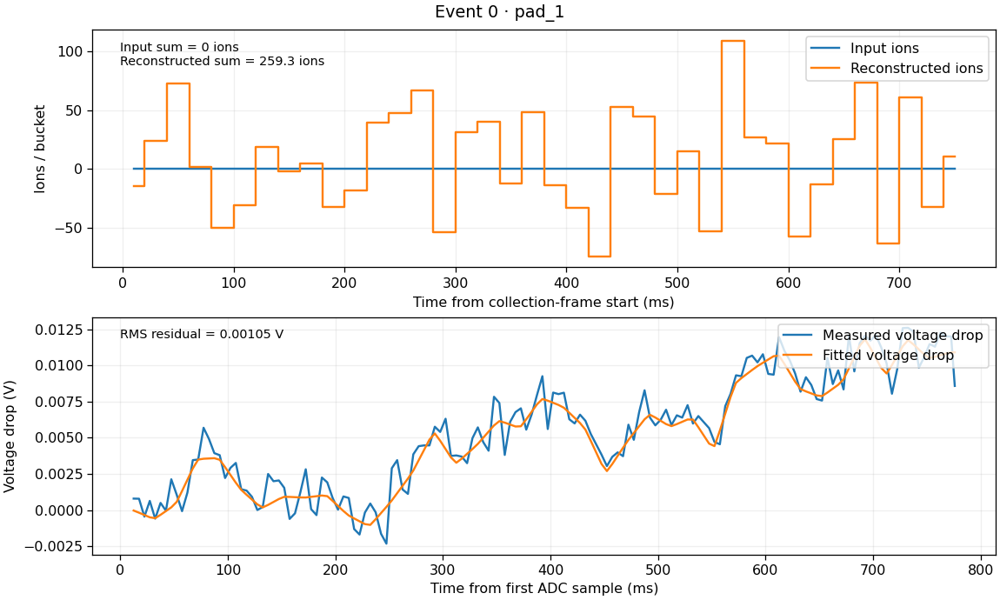
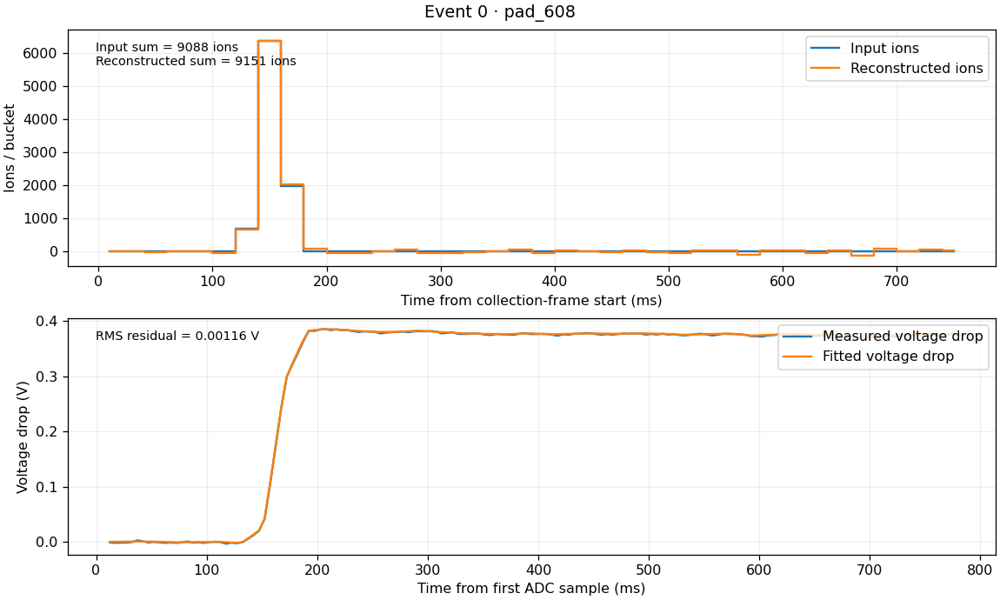
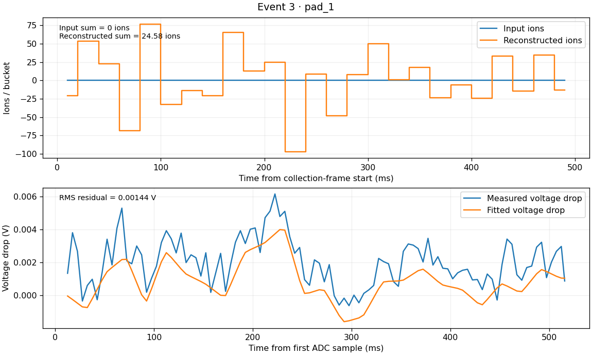
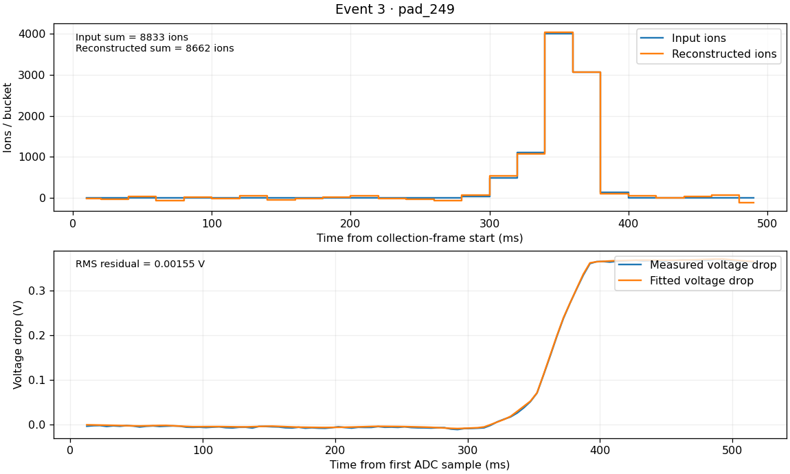
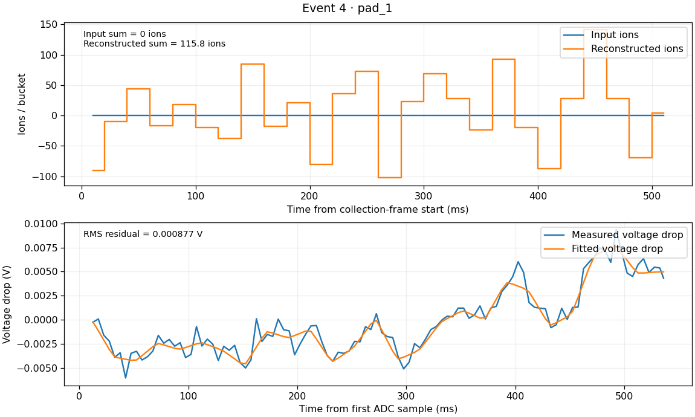
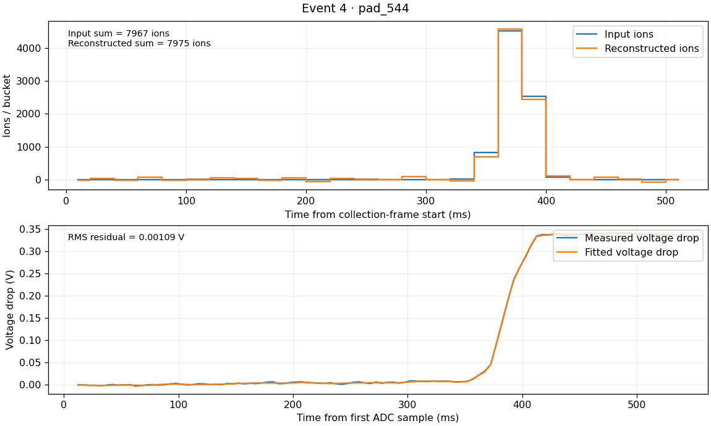
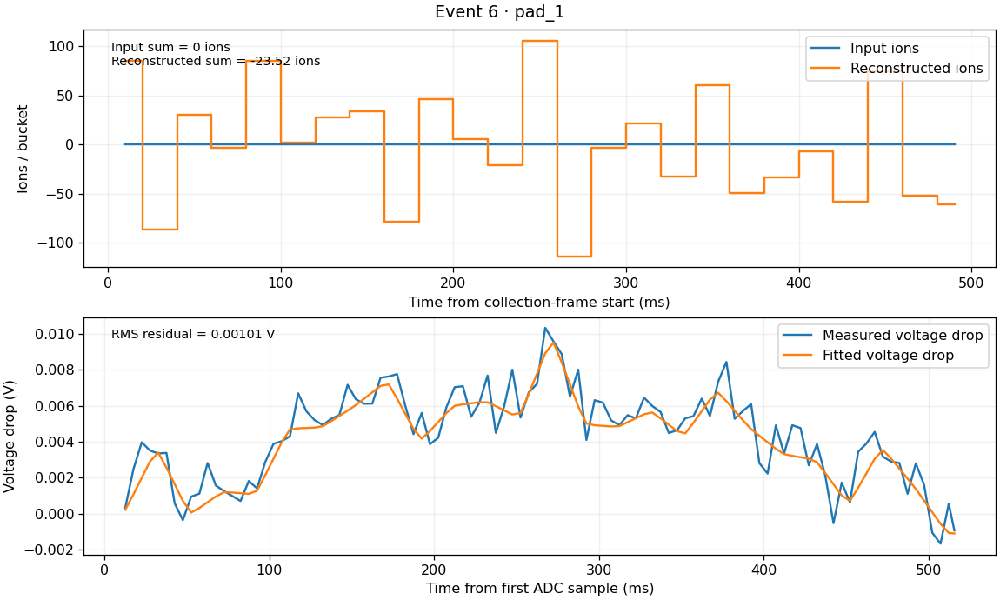
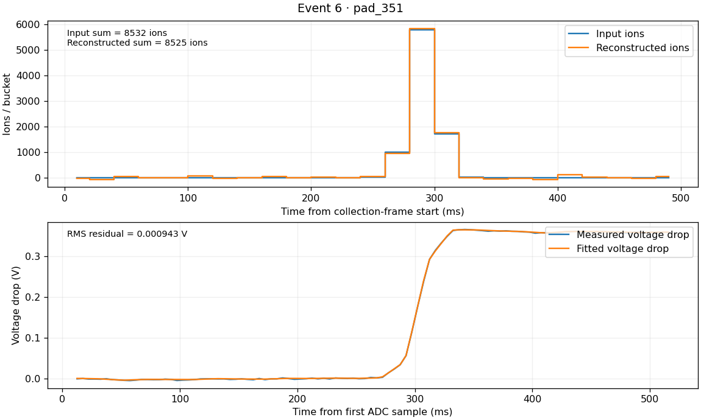
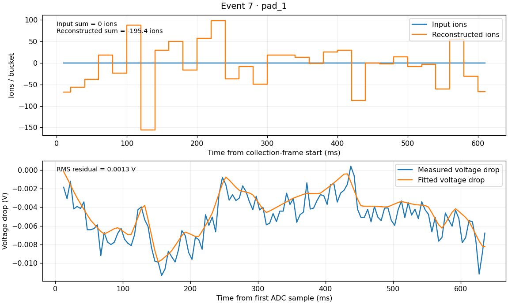
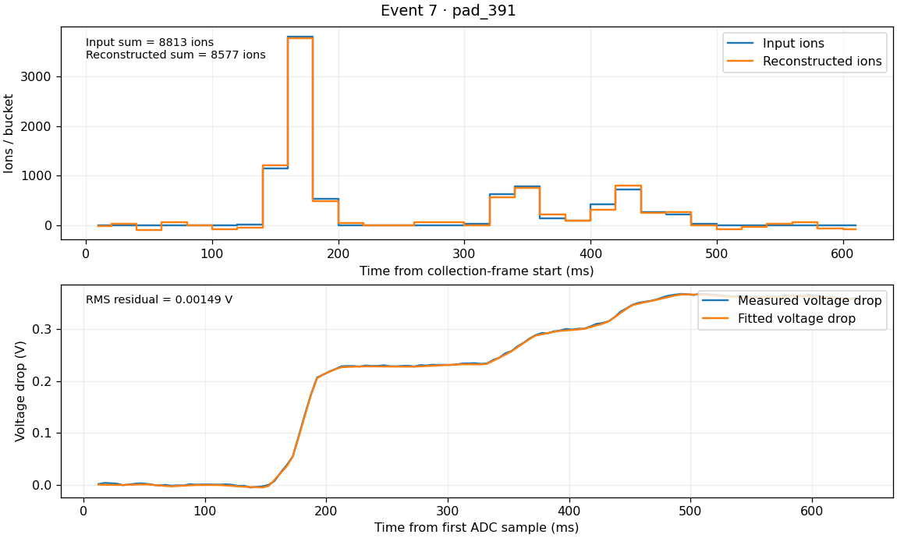
Full event vectors remain in memory. This report uses saved numerical controls and selected examples.